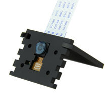

Держатель для камеры Raspberry Pi
Это держатель/крепление для Raspberry Pi Camera Module, обычно для установки камеры в корпус, на платформу или на мини-штатив. Для официальных Raspberry Pi камер встречаются варианты крепления в кейсах и на tripod-mount, но сам «держатель» как отдельный аксессуар может быть неофициальным.

Документация
Характеристики
Подробнее
Назначение детали — зафиксировать камеру Raspberry Pi в нужном положении и обеспечить удобное направление объектива. Для официальных камер Raspberry Pi известны совместимые сценарии монтажа: в корпусе Pi Zero Case есть камера-лid с держателем для Camera Module 1/2, а High Quality Camera имеет крепление под CS- и M12-объективы и штатное tripod-mount. Если речь о простом «держателе для камеры Raspberry Pi» без точной модели, это обычно пассивное механическое крепление без электроники. На практике его используют в DIY-проектах, робототехнике, наблюдении и при съёмке с фиксированной точки. Точная совместимость зависит от модели камеры и корпуса/крепления.